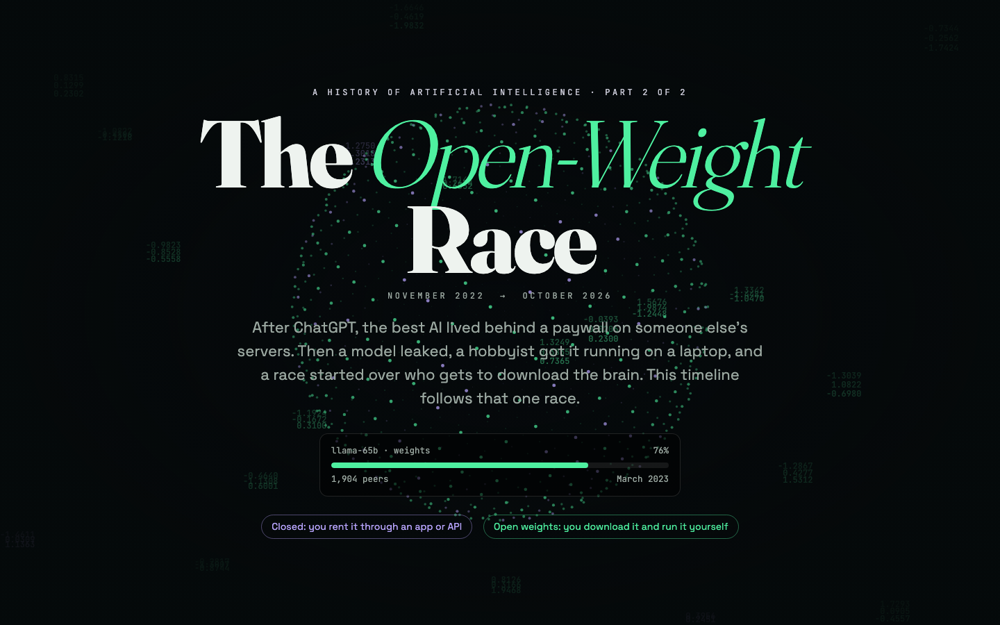

The Open-Weight Race: four years of AI, told as one race
After ChatGPT, the best AI models lived behind a paywall. Then a model leaked, and a race started over who gets to give the weights away. Our group built an interactive timeline that follows that race from November 2022 to October 2026.

The question
A trained AI model is mostly a giant file of numbers called weights. Whoever holds the file can run the model, change it and build on it. In 2022 the best models were closed: you sent text to a company's servers and got an answer back. The race is about who gives that file away, and it matters for cost, privacy, safety and geopolitics.
The timeline separates three ideas that people mix up. Closed models are rented through an app or API. Open-weight models can be downloaded and run on your own computer. Fully open source models share the training data and code too, so anyone could rebuild them.
What we built
Each of the 53 events has an exact date, who released it, a license tag, a plain-language description and a line called "why it matters." Filters let a reader follow the US thread, the China thread, models, policy or research. A scoreboard shows how long open models took to catch up with closed ones: about 12 months, then 16, then 4, in our pairings.
This is the live timeline. Open it full screen to scroll through all 53 events.
Who measures matters
The most useful thing we found was that the gap between the US and China in AI has no single answer. Five measurements from four organizations gave five different pictures.
These numbers don't contradict each other. A leaderboard percentage, an index measured in months and a private government test measure different things, so they can't be compared directly. Critics also questioned the private tests behind the eight-month figure. When I quote a gap now, I ask what was measured and by whom.
How we kept it honest
- Each catch-up pair is approximate and based on what each lab reported on its own benchmarks. The page says so next to the chart.
- The page ends with 20 sources, from lab announcements and papers to Epoch AI, Stanford and NIST.
- When we reread the timeline, we found two August 2025 releases listed a day out of order, and fixed it.
- Our first timeline, covering 1950 to 2022, had months only. Once we noticed, we added exact dates to all 38 events and held this one to the same standard.
What I took from it
- Sources disagree, and the disagreement is part of the story. I'd rather show five numbers and explain them than pick one.
- Defining one word, "weights," up front made the other 53 events easier to read.
- A timeline is a design problem as much as a research problem. The order of events, the filters and the gap chart decide what a reader remembers.
- Next time I'd add a "last checked" date to every claim, since this topic changes every month.